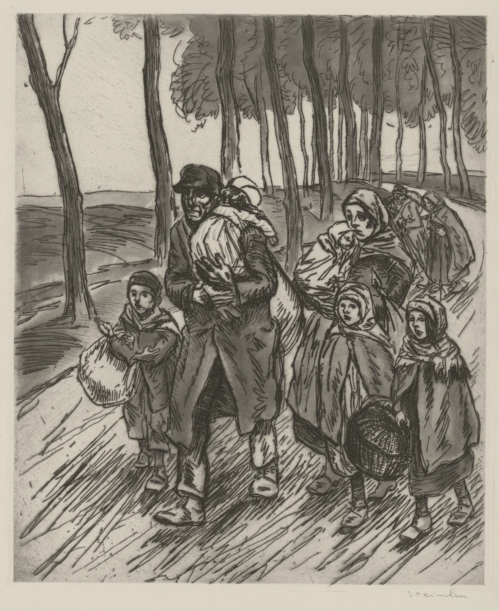

· Edición 80 · 4 min de lectura
Colombia: uno de cada 19 habitantes es venezolano; con papeles, ganaron más

Colombia: uno de cada 19 habitantes es venezolano; con papeles, ganaron más
Ver todo el tema, de principio a fin →
En pocas palabras. Qué le pasa a un país al que, en doce años, llegan casi tres millones de vecinos para quedarse? En Colombia ya es venezolano uno de cada 19 habitantes, y cerca de medio millón no tiene papeles. Cuando se dieron permisos en 2018, el ingreso de quienes los recibieron subió 22%, casi sin efecto en el empleo de los colombianos.
El dato curioso. Hace dos siglos, un venezolano en Bogotá no era extranjero. Entre 1819 y 1831, Venezuela, la Nueva Granada y Ecuador fueron un solo país, la Gran Colombia, con capital en Bogotá; su presidente, Simón Bolívar, nació en Caracas y murió cerca de Santa Marta. Y la corriente ha ido en los dos sentidos: en 2011, el censo venezolano contó 721.791 colombianos viviendo allá.
¿Qué está cambiando? El 8 de febrero de 2021, el presidente Iván Duque anunció un permiso de diez años para los venezolanos. Filippo Grandi, jefe de Acnur, la agencia de la ONU para los refugiados, lo llamó lo más importante hecho en el continente desde 1984.
En 2026, el Gobierno de Abelardo de la Espriella ordenó operativos contra extranjeros señalados de delitos y sin papeles: entre el 7 de agosto y el 29 de octubre deportó o expulsó a 812, según la Presidencia. El 6 de noviembre sacó de Bogotá a más de 80 venezolanos señalados de delitos, en el operativo más grande del año.
En 2014 vivían en Colombia 23.573 venezolanos, según Migración Colombia. A comienzos de 2026 eran unos 2,84 millones: unas 120 veces más.
Fuente: Migración Colombia, citada por Bloomberg Línea, El País, La República, Cambio y France 24. Cortes de fin de año; 2026, enero y redondeado
Ver datos
| personas | |
|---|---|
| 2014 | 23.573 |
| 2018 | 1.174.743 |
| 2019 | 1.771.237 |
| 2020 | 1.729.537 |
| 2023 | 2.864.796 |
| 2026 | 2.840.000 |
¿Y a mí qué? Son compañeros de trabajo, de bus y de pupitre en un país que envejece: según el DANE, Colombia dejaría de crecer hacia 2043 y bajaría a 50,5 millones de habitantes en 2070.
¿Por qué?
- La crisis empujó. Venezuela se hundió y Colombia era la puerta de al lado. (Conocimiento general.)
- Volver no es fácil. Tras la captura de Nicolás Maduro, el 3 de enero, muchos dudaban de regresar, según la prensa.
- Los papeles deciden el resto. El permiso funciona como una cédula: con él se firma un contrato, se abre una cuenta y se afilia uno a una EPS.
¿Qué significa para Colombia?
- Trabajo. Más de 75 de cada 100 venezolanos ocupados trabajan en la informalidad, según la ANDI, el gremio de los industriales, y la Fundación Santo Domingo.
- Mundo. Los 38 países de la OCDE, Colombia entre ellos, recibieron 6,1 millones de migrantes permanentes en 2025, según su informe del 12 de noviembre.
¿Quién se está preparando? Colombia ya hizo la prueba: en 2018 ofreció un permiso a 442.462 venezolanos sin papeles. Un estudio dirigido por Ana María Ibáñez comparó a quienes alcanzaron a inscribirse con otros llegados en las mismas fechas. Con el permiso, el consumo subió 48% y el ingreso por trabajo, 22%. Otro estudio halló en el empleo formal de los colombianos un efecto «negativo pero insignificante».
En Alemania, 64 de cada 100 refugiados llegados en 2015 trabajaban en 2022 (77 en toda la población), según el IAB, un instituto público de investigación.
Pero ojo.
- No todos avanzan igual. Entre las refugiadas en Alemania, solo 31 de cada 100 tenían trabajo.
- La frontera pesa. Tras la reapertura de 2016, los homicidios subieron cerca de la frontera, según un estudio publicado por el Banco de la República; el riesgo lo corrieron sobre todo los migrantes, dicen los autores.
Lo que ya habíamos contado. El 23 de octubre escribimos que hacia 2036 habrá en Colombia más mayores de 60 años que niños (ver esa edición). Los que llegaron también cuentan.
Qué hacer con esto
Para ir pensando. A una persona venezolana con PPT se la puede contratar como a cualquiera: contrato, salud y pensión.
Cómo prepararse. Quien tenga el PPT, que lo mantenga vigente; el Gobierno dice que no está en juego.
Ojo con el cuento. Un video de expulsados parece toda una política migratoria. Pregunte cuántos tienen papeles y cuántos cotizan: los expulsados son cientos; los que se quedan, millones.
Dos lecturas
Las dos posturas sobre el tema, en su mejor versión
Papeles para integrar. Quien ya está aquí no se va a ir por un operativo. Con permiso, paga impuestos, cotiza y su hijo estudia; sin él, trabaja en la sombra. La evidencia colombiana de 2018 muestra que ganan ellos y que los demás casi no pierden.
Primero, control y orden. Un país debe saber quién entra y quién se queda. Expulsar a quien delinque protege también a los migrantes que cumplen, y un permiso tras otro, sin reglas claras, invita a nuevas llegadas que un Estado con las cuentas en rojo no puede atender.
Quién decide y cuándo
Quién decide. El presidente y Migración Colombia, adscrita a la Cancillería. No encontramos un proyecto de ley sobre el tema.
Cuándo. El Estatuto que creó el PPT, el permiso actual, rige hasta 2031. Para el medio millón sin papeles no hay fecha.
Cómo participar. Un derecho de petición a Migración Colombia puede preguntar a cuántos expulsó y por qué.
Seguimiento de la decisión
Pendiente · sin fecha fija
Presidencia de la República y Migración Colombia, con la Cancillería: Definir qué pasa con los cerca de 500.000 venezolanos que viven en Colombia sin papeles (un nuevo permiso, como en 2018 y 2021, u operativos y expulsiones) y qué sigue para quienes tienen el Permiso por Protección Temporal (PPT) cuando venza el Estatuto que lo creó, en 2031.
Desde agosto de 2026, el Gobierno ordenó operativos que empiezan por los extranjeros señalados de delitos y dijo que no afectan a quienes ya tienen el PPT. No encontramos un proyecto de ley ni una fecha para decidir sobre quienes no tienen papeles.
La paradoja del día
Lo más absurdo de la edición, en dos líneas
Hace dos siglos, un caraqueño presidía un país con capital en Bogotá. En 2026, un caraqueño necesita un permiso para trabajar en Bogotá. La frontera es más joven que la ciudad.
Para conversar
La pregunta. ¿Qué debería pedirle Colombia a quien llega para quedarse, y qué debería ofrecerle?
Para leer más
Libros para seguir con el tema
Los mitos de la inmigración, de Hein de Haas (Península, 2024; traducción de Juanjo Estrella González). Un sociólogo de la Universidad de Ámsterdam revisa, con datos, 22 ideas sobre la migración que usan por igual la derecha y la izquierda.
Éxodo. Inmigrantes, emigrantes y países, de Paul Collier (Turner, 2013). Un economista de Oxford pregunta qué ganan y qué pierden el país que recibe, el que despide y el que se va; es más escéptico que el anterior.
¿Le interesa ver las fuentes?
Todos los documentos y datos que usamos
36 fuentes: 4 académicas, 9 oficiales, 2 de datos, 1 de una organización, 17 de prensa, 3 de referencia.
- Prensa France 24 (24 de agosto de 2026), con cifras de Migración Colombia. De la Espriella estrena su política migratoria en Colombia con un anuncio de operativos y deportaciones
- Prensa El Espectador (2026), con datos públicos de Migración Colombia. La integración de la migración venezolana en el cambio de gobierno en Colombia
- Oficial Junta de Inmigración y Refugiados de Canadá (IRB), respuesta a solicitud de información, vía ecoi.net. Colombia: situación de los venezolanos, Permiso por Protección Temporal y cifras de Migración Colombia
- Prensa Bloomberg Línea (26 de octubre de 2021), con cifras de Migración Colombia. Migrantes venezolanos en Colombia aumentaron de 23.573 a 1,8 millones en 7 años
- Prensa El País, Cali, con cifras de Migración Colombia. Aumenta a 1.174.000 la cifra de venezolanos residiendo en Colombia
- Prensa La República (febrero de 2020), con cifras de Migración Colombia. Según Migración, más de 1,77 millones de venezolanos están radicados en Colombia
- Prensa Cambio (febrero de 2024), con cifras de Migración Colombia. Reducción en la cifra de migrantes venezolanos en Colombia
- Datos DANE, Encuesta Nacional de Calidad de Vida 2025 (comunicado). Encuesta Nacional de Calidad de Vida (ECV) 2025
- Datos DANE. Proyecciones de población
- Prensa Bloomberg Línea, sobre un informe de ANIF con las proyecciones actualizadas del DANE. ANIF advierte los retos para Colombia en 2070 con una sociedad envejecida
- Prensa Valora Analitik. Reducción de la población colombiana a 2070 será mayor a la prevista inicialmente
- Prensa La Silla Vacía (2026). Balance de deportaciones y expulsiones entre el 7 de agosto y el 29 de octubre de 2026
- Prensa Minuto30 (2026). Presidencia: 812 procedimientos de deportación y expulsión entre el 7 de agosto y el 29 de octubre
- Prensa Cambio (6 de noviembre de 2026). Gobierno expulsa a más de 80 venezolanos señalados de delitos: los sacaron de Bogotá en la madrugada rumbo a la frontera
- Prensa Vanguardia (6 de noviembre de 2026). 80 extranjeros fueron expulsados de Colombia: este es el balance del operativo
- Prensa Las2orillas (2026). Las reglas que podrían limitar la deportación de venezolanos ordenada por De la Espriella
- Oficial Acnur, Agencia de la ONU para los Refugiados (8 de febrero de 2021). Discurso del Alto Comisionado sobre el nuevo Estatuto de Protección Temporal que Colombia otorgará a los venezolanos
- Prensa Voz de América (8 de febrero de 2021). Duque anuncia estatuto temporal de protección para migrantes venezolanos
- Oficial Función Pública, Gestor Normativo. Decreto 216 de 2021: Estatuto Temporal de Protección para Migrantes Venezolanos
- Oficial Cancillería de Colombia (2018). 442.462 venezolanos identificados en registro RAMV recibirán regularización temporal
- Académica Ibáñez, Moya, Ortega, Rozo y Urbina, Journal of the European Economic Association (2025), vol. 23, n.º 3, en RePEc. Life out of the Shadows: The Impacts of Regularization Programs on the Lives of Forced Migrants
- Académica Banco Mundial, documento de trabajo de investigación 9928 (febrero de 2022). Life out of the Shadows: Impacts of Amnesties in the Lives of Refugees
- Oficial Banco Mundial (23 de marzo de 2022). Out of the shadows: the impact of amnesties on the lives of migrants
- Académica Bahar, Ibáñez y Rozo, Journal of Development Economics (2021), vol. 151; Instituto IZA. Give me your tired and your poor: Impact of a large-scale amnesty program for undocumented refugees
- Prensa Bloomberg Línea, sobre un estudio de la ANDI y la Fundación Santo Domingo. Tasa de ocupación de la población migrante venezolana en Colombia supera el 66%
- Prensa Vanguardia (23 de febrero de 2026). Migrantes venezolanos en Colombia dudan regresar a su país tras captura de Maduro
- Oficial Migración Colombia (marzo de 2026). Monitoreo de dinámicas migratorias 02, frontera colombo-venezolana
- Oficial OCDE (12 de noviembre de 2026). Migration to OECD countries declines for second consecutive year but remains high by historical standards
- Prensa Euronews (1 de mayo de 2024), con datos del Instituto de Investigación del Empleo de Alemania (IAB). Majority of Germany's 'open door' refugees have entered the labour force
- Oficial Instituto de Investigación del Empleo de Alemania (IAB), informe breve 17/2025. Arbeitsmarktintegration von Geflüchteten
- Académica Knight y Tribín, Journal of Development Economics (2023); Banco de la República, Borradores de Economía 1121. Immigration and Violent Crime: Evidence from the Colombia-Venezuela Border
- Referencia Encyclopaedia Britannica. Gran Colombia
- Organización Proyecto Migración Venezuela (Semana), informe. Olas migratorias entre Colombia y Venezuela, primera parte
- Oficial Asamblea General de las Naciones Unidas (4 de diciembre de 2000). Resolución A/RES/55/93: proclamación del 18 de diciembre como Día Internacional del Migrante
- Referencia Planeta de Libros (ficha del libro). Los mitos de la inmigración, de Hein de Haas (Península, 2024; traducción de Juanjo Estrella González)
- Referencia Lecturalia (ficha del libro). Éxodo. Inmigrantes, emigrantes y países, de Paul Collier (Turner, 2013)
Glosario
Las palabras técnicas, explicadas
- PPT (Permiso por Protección Temporal): el documento que identifica a los venezolanos acogidos al Estatuto de 2021. Permite trabajar, estudiar, abrir cuentas y afiliarse a salud.
- Estatuto Temporal de Protección: la norma de 2021 (Decreto 216) que creó el PPT, con una vigencia de diez años.
- Regularizar: darle a un migrante que está sin papeles un permiso legal para quedarse.
- Deportación y expulsión: las dos sacan a un extranjero del país. La expulsión es la más grave y puede impedir volver durante años, según Migración Colombia.
- Empleo formal: el que tiene contrato y aportes a salud y pensión.
- OCDE: la Organización para la Cooperación y el Desarrollo Económicos, un club de 38 países, Colombia entre ellos, que compara políticas y datos.
Nota metodológica
Cómo se hizo esta edición y qué no pudimos verificar
El horizonte. ¿Cambia el rumbo de cómo vive la gente, en Colombia o en el mundo, dentro de 10 a 50 años? Sí. En doce años, los venezolanos en Colombia pasaron de 23.573 a unos 2,84 millones, según Migración Colombia, y el país, según las proyecciones del DANE, dejaría de crecer hacia 2043. Lo que se decida sobre su integración (papeles, trabajo formal, escuela) define buena parte de la fuerza de trabajo, los aportes a pensión y la convivencia de las próximas décadas.
El filtro. Entra por la puerta del cambio de fondo: hay una serie de doce años (Migración Colombia, 2014 a 2026) y una proyección institucional (DANE); toca a Colombia por un canal directo (uno de cada 19 habitantes); y hay algo que se decide ahora (los operativos desde agosto y el futuro de cerca de medio millón sin papeles). La puerta de entrada son las expulsiones de noviembre y el informe de migración de la OCDE del 12 de noviembre. Es miércoles; el lunes y el martes fueron nudos. Hoy entra un cambio de fondo, que también es tema del mundo por su origen. No es tema de ciencia: esa parte de la mezcla sigue pendiente.
Puntaje. De 1 a 3 en cada criterio; peso en la vida y horizonte valen doble (máximo 24). Solo entra un tema con horizonte 3.
| Tema | Puerta | ¿Cambia el rumbo en 10 a 50 años? | Alcance | Peso | Horizonte | Cercanía | Margen | Mirada | Total | Resultado |
|---|---|---|---|---|---|---|---|---|---|---|
| Migración venezolana: papeles e integración | fondo | Sí: uno de cada 19 habitantes, en un país que envejece | 3 | 3 | 3 | 3 | 3 | 2 | 23 | Elegido (edición 80) |
| Electricidad de los centros de datos (AIE) | fondo | Sí | 3 | 2 | 3 | 2 | 1 | 1 | 17 | Ya contamos el informe el 19 de noviembre |
| Aire de Bogotá y buses eléctricos | avance | Sí | 3 | 3 | 3 | 3 | 2 | 2 | 22 | No pasa el filtro: falta una serie oficial de varios años |
| Hipopótamos del Magdalena Medio | nudo | A medias: un río, no un país | 1 | 2 | 2 | 3 | 3 | 1 | 16 | Menor alcance; ya se cuenta en todas partes |
| Repartidores de plataformas (Decreto 991) | fondo | Sí | 2 | 2 | 3 | 3 | 1 | 2 | 18 | Sin hecho nuevo desde agosto |
| Crecimiento del tercer trimestre e inflación | contexto | No | 3 | 2 | 1 | 3 | 1 | 1 | 14 | Coyuntura |
En el tema elegido, la mirada vale 2: la prensa cuenta cada vuelo de expulsión, pero casi nadie lo cruza con la evidencia de 2018 y con las proyecciones de población. El aire de Bogotá suma 22, pero no pasa el filtro del avance: solo encontramos una cifra de prensa (24% menos partículas desde 2018), no la serie oficial. Ningún otro tema pasa filtro y umbral de 19, así que hoy hay una sola edición.
Hicimos unas 45 búsquedas en español, inglés y alemán. No pudimos abrir los documentos completos: ni el informe de la OCDE, ni los estudios, ni las páginas de Migración Colombia, el DANE o el Banco de la República. Trabajamos con resúmenes, fragmentos y resultados de búsqueda, y no les atribuimos más de lo que dicen. De 36 fuentes, 19 no son de prensa (tres son fichas de referencia). Varias cifras de Migración Colombia solo las encontramos citadas por la prensa.
Quedó sin verificar o con límites:
- Cuántos son. Las cifras de Migración Colombia son registros administrativos y cambian con cada corte. Para 2026 vimos 2.844.498 (El Espectador, sin fecha de corte clara) y «unos 2,84 millones a enero» (France 24); en el gráfico usamos 2.840.000 redondeado. La serie mezcla cortes de fin de año con el de enero de 2026, y la cifra de 2014 sale de una nota de prensa. «Uno de cada 19» y «unas 120 veces» son nuestra cuenta, con la población de 53,3 millones que estimó el DANE para 2025.
- Sin papeles. Las fuentes dan entre 517.589 (El Espectador) y 521.272 (la junta canadiense de refugiados, con cifras de Migración Colombia); otras notas hablan de hasta 850.000. Usamos «cerca de medio millón».
- Las expulsiones. Las 812 son del balance de la Presidencia que citan La Silla Vacía y Minuto30, e incluyen todas las nacionalidades. La del 6 de noviembre (más de 80 venezolanos sacados de Bogotá hacia la frontera) la reportaron Cambio, Vanguardia y otros medios, y el presidente la confirmó; «el más grande del año» es lectura de la prensa. Hubo otros grupos después, en Bucaramanga y Cúcuta.
- Que el PPT no está en juego. Es lo que dijo el Gobierno según France 24 y otras notas; no vimos una norma que lo diga.
- El estudio de 2018. Las cifras (48% y 22%) son de la versión revisada del estudio (2024-2025); una versión anterior, del Banco Mundial en 2022, daba 60% y 31%. No incluimos el efecto en el empleo formal porque no pudimos confirmarlo en la versión publicada en el Journal of the European Economic Association, y puede diferir en detalles. La comparación es entre quienes se inscribieron en el registro de 2018 y quienes no: un experimento natural, no un sorteo.
- El efecto en los colombianos. «Negativo pero insignificante» viene del resumen del estudio de Bahar, Ibáñez y Rozo; según los autores, se concentró en trabajadores con más estudios y en mujeres.
- La informalidad. El «más de 75 de cada 100» del estudio de la ANDI y la Fundación Santo Domingo lo leímos en una nota de prensa sin el periodo exacto.
- Las proyecciones. El pico de 2043 con 56 millones y los 50,5 millones de 2070 los tomamos de notas sobre un informe de ANIF que usa la actualización del DANE; no vimos la tabla oficial.
- Alemania. El 64 y el 77 de cada 100 (y el 31 de las mujeres) son de 2022, según Euronews con datos del IAB. Un informe del IAB de 2025 da el mismo 64 para 2024; no pudimos leerlo entero.
- La frontera. El estudio de Knight y Tribín encontró más homicidios cerca de la frontera tras la reapertura de 2016; que el riesgo lo corrieran sobre todo los migrantes viene de su introducción, que leímos solo en fragmento.
- La cita de Grandi. La frase la recoge Voz de América; el comunicado de Acnur del mismo día habla de un «gesto humanitario emblemático». La parafraseamos, sin comillas.
- El dato curioso. Los 721.791 colombianos del censo venezolano de 2011 los tomamos de un informe del Proyecto Migración Venezuela (otra nota de prensa dice «más de 721.000»); no vimos las tablas del instituto de estadística de Venezuela. Las fechas de la Gran Colombia vienen de una enciclopedia.
- La paradoja. Que el primer presidente de la Gran Colombia gobernara desde Bogotá es conocimiento general de historia; la capital y las fechas las confirmamos en la Britannica.
La imagen es «Familia refugiada», aguafuerte y aguatinta de Théophile-Alexandre Steinlen de 1915, de la colección abierta del Cleveland Museum of Art (CC0). Antes probamos dos imágenes en Wikimedia Commons: una no existía y la otra, la foto de un relieve de Daumier, no se leía bien en tinta y papel.
Los libros: ninguno está en el catálogo de Santo & Seña, así que van sin enlace. La editorial, el año y el traductor de Los mitos de la inmigración los confirmamos en la ficha de la editorial; los de Éxodo, en una ficha de lectores que trae un error en el título original, así que no lo citamos.